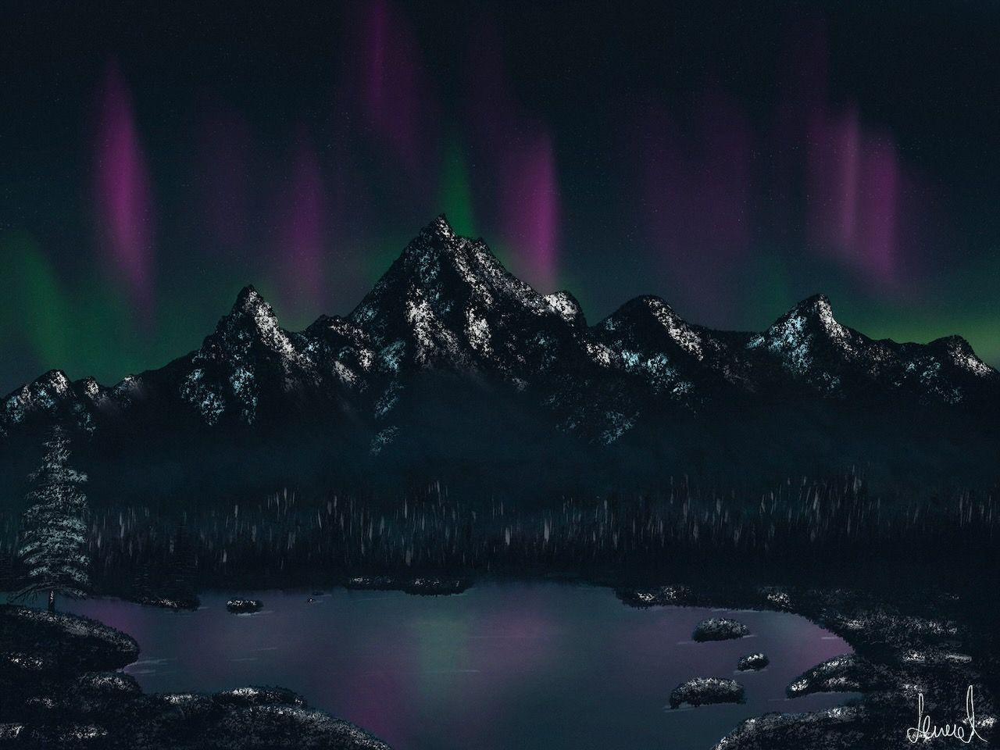
Art
Trying out Procreate
First try on painting with Procreate on iPad. With techniques from Bob Ross even a layman like me can create decent images.
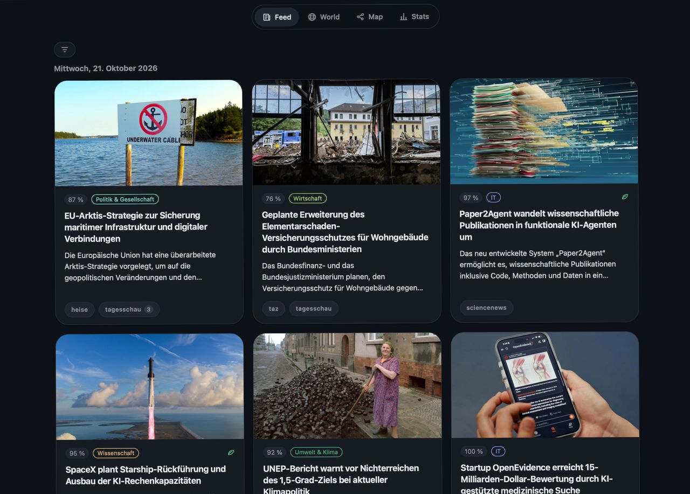
Data Science
To make sure I don't miss any important news, I developed an app that uses a machine learning model to show me only the most relevant developments and then summarizes them.
read more →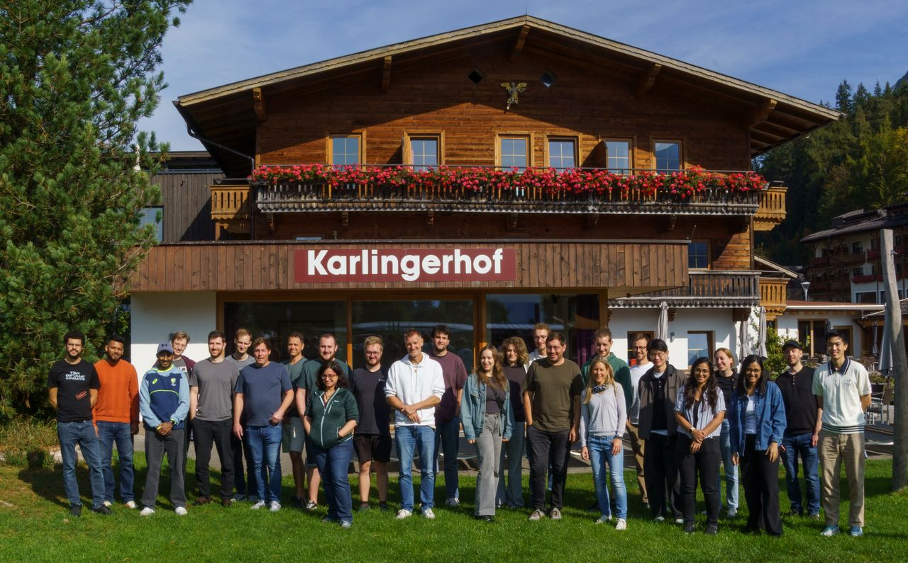
Academia
We spent a strategy workshop at Lake Achensee with the entire TTZ Landsberg (Data Science and Autonomous Systems) team.
de.linkedin.com ↗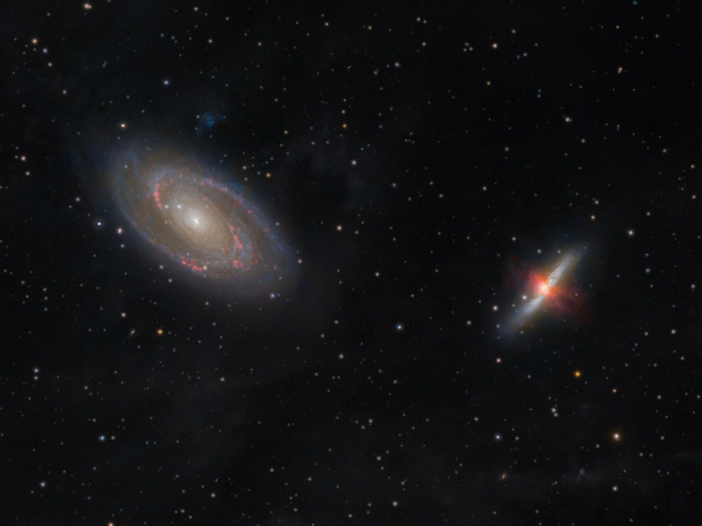
Astrophotography
20h of integration time reveals the fine interstellar dust in our galaxy and also the bipolar outflow of ionized gas from M82.
telescopius.com ↗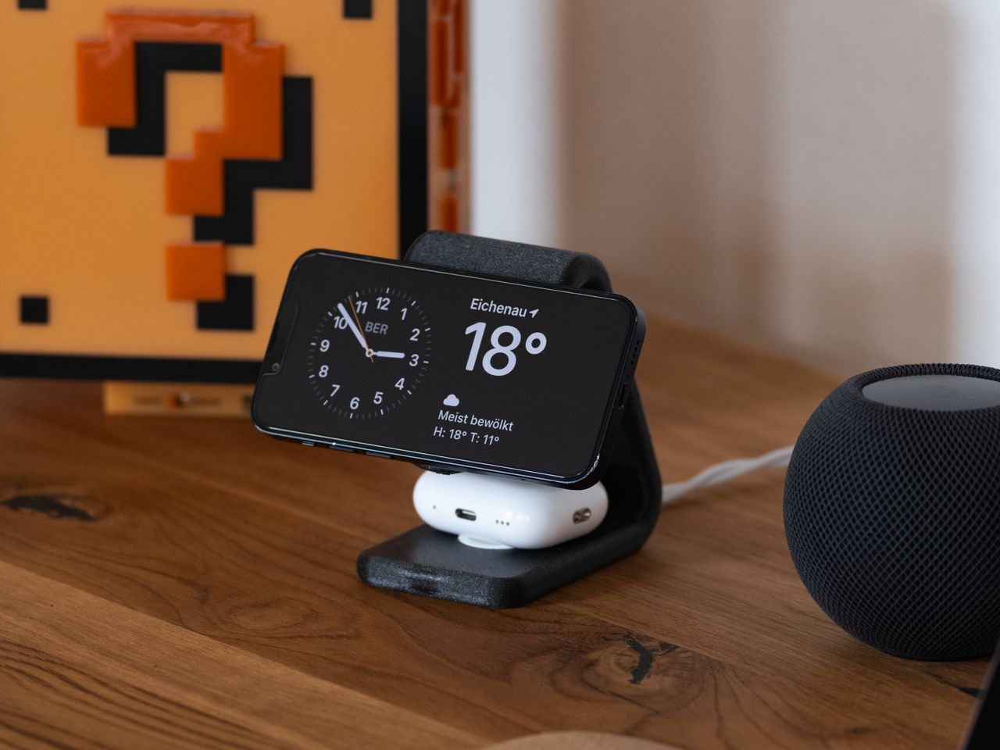
3D Printing
Stand designed in FreeCAD charges an Apple Watch and iPhone at the same time, while the phone starts Standby mode automatically.
read more →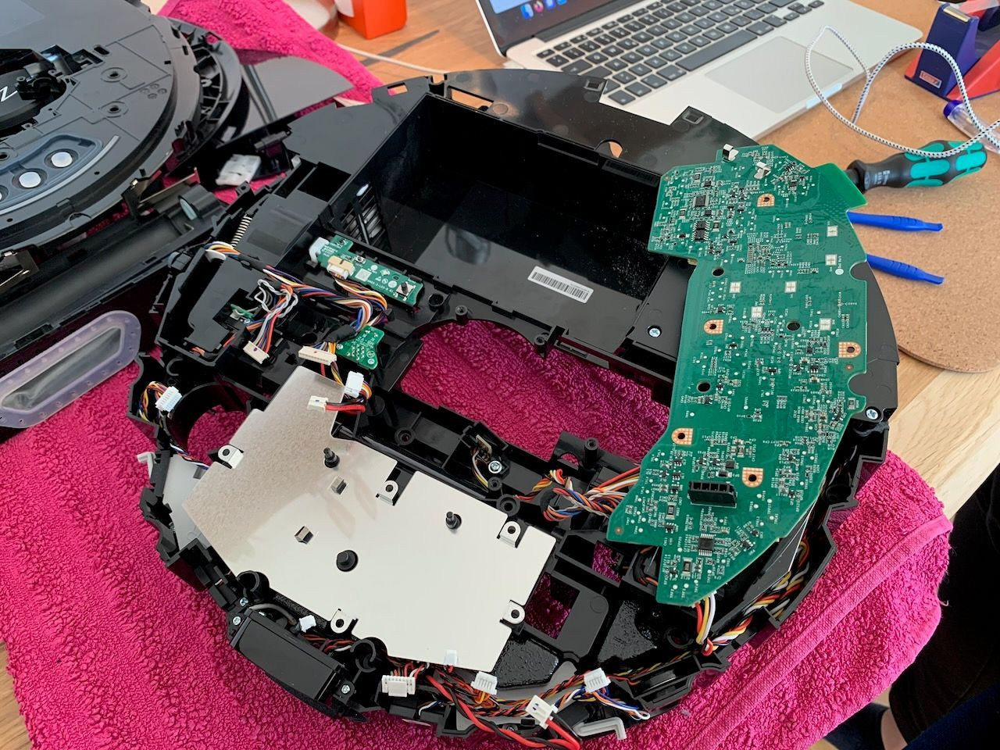
Smart Home
To have a completely local, private and secure vacuum robot, I completely took it apart to install Valetudo. This allows the robot to run its own webserver, so it is no longer dependent on external servers of the manufacturer. Also it can be controlled via MQTT.
read more →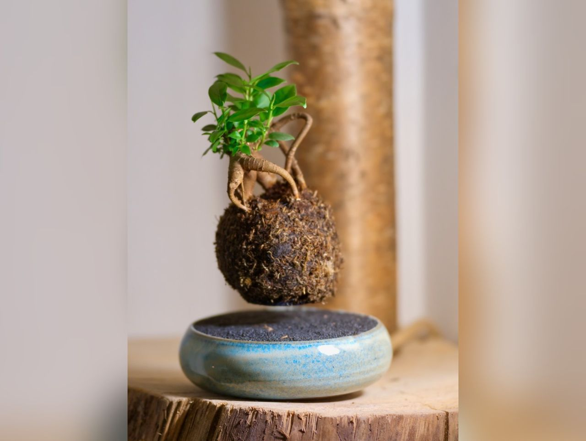
Electronics
A magnetic levitation device designed to make a bonsai tree float in the air.
read more →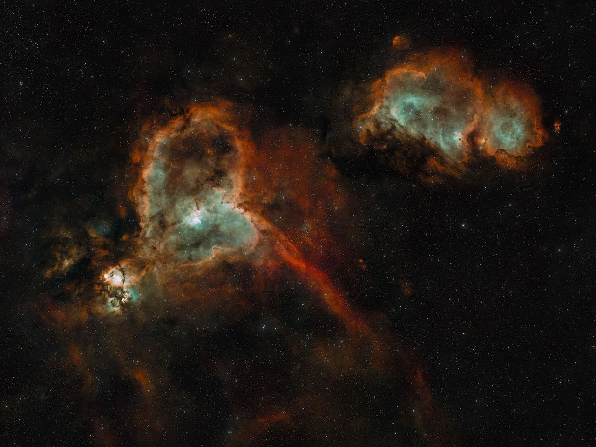
Astrophotography
Collecting lights over several nights resulted in this beautiful image. A narrowband filter for Ha and OIII was used to improve contrast on these faint nebulae.
telescopius.com ↗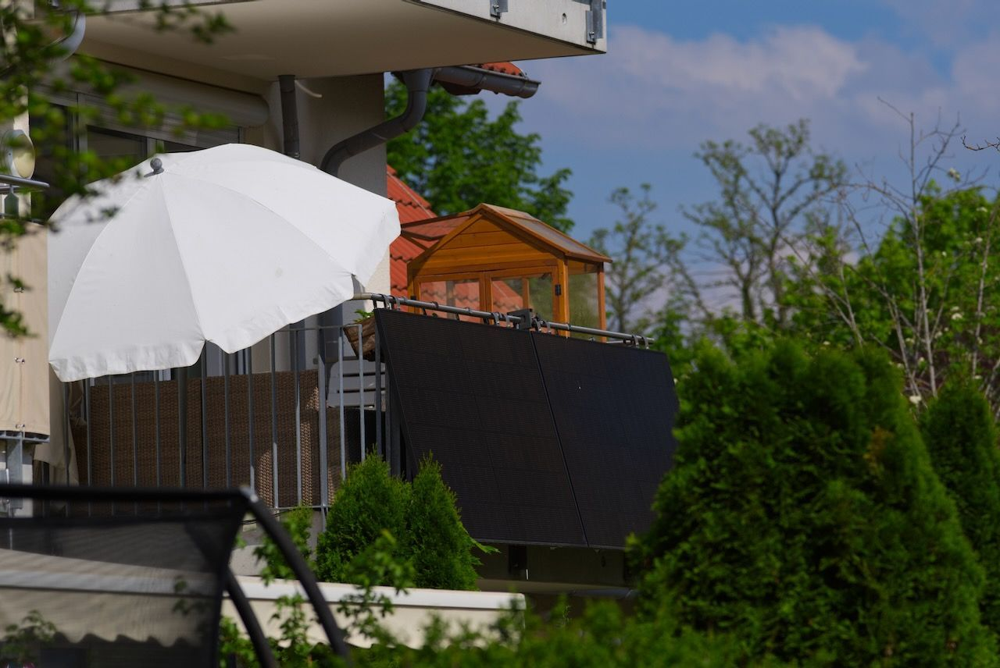
Energy
Thanks to the successful petition on ‘balcony power stations’ and committed individuals such as Andreas Schmitz, we are now able to meet a large proportion of our electricity needs ourselves. Some of the electricity we don’t use is used for citizen science projects, such as Folding@Home.
read more →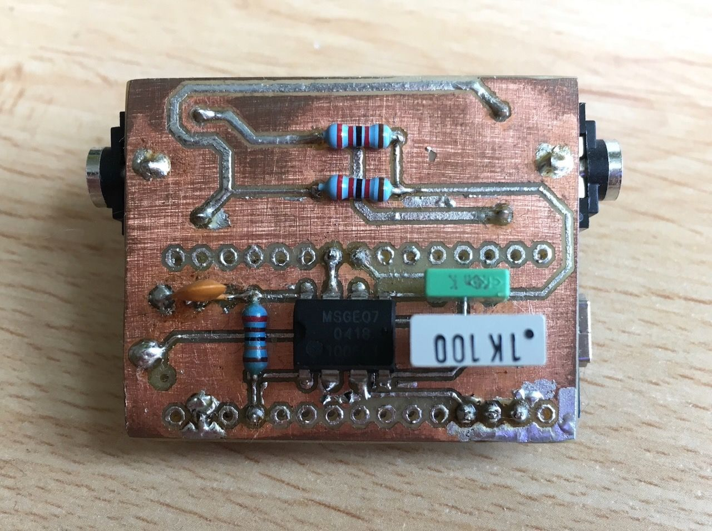
Electronics
A DIY etched circuit board designed to control LEDs in sync with the music being played. An Arduino measures the signal voltage after low-frequency sounds have been filtered through a low-pass filter.
read more →Astrophotography
A 3D animation of our astrophotography setup, created using Gaussian splatting. The setup currently consists of a Fuji X-T5, a Samyang 135mm lens and a parallactic tracking mount. The lens mount was 3D-printed, which also allows for very precise focusing.
telescopius.com ↗
Art
First try on painting with Procreate on iPad. With techniques from Bob Ross even a layman like me can create decent images.
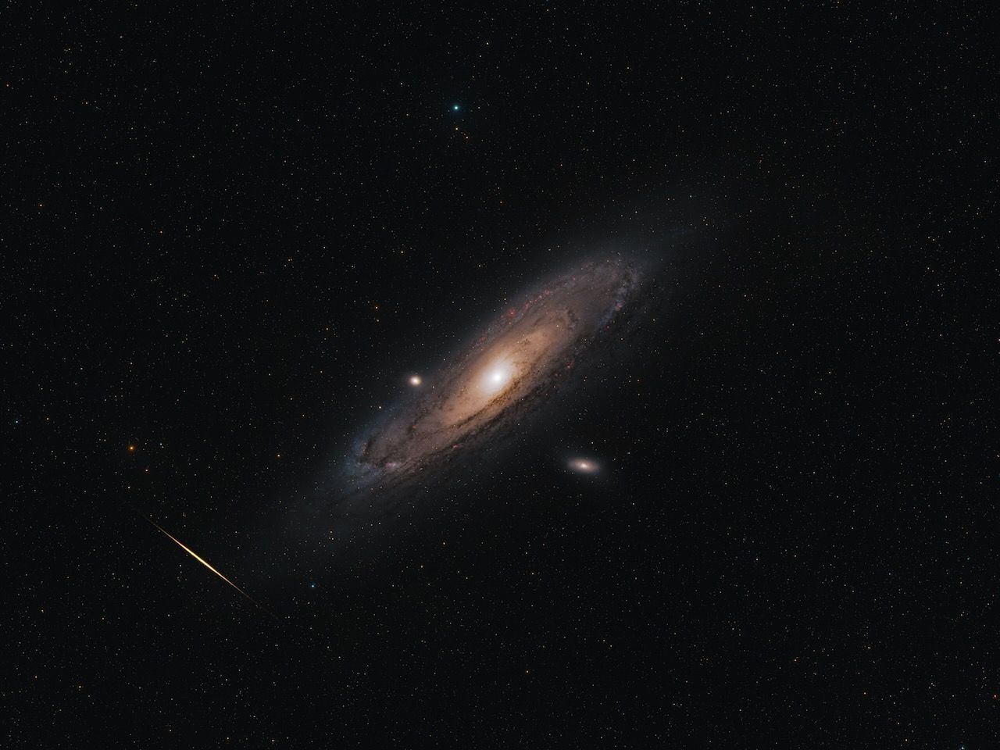
Astrophotography
This picture of M31 shows three layers: a solar flare from Earth’s orbit, stars from our own galaxy and with Andromeda a whole other galaxy with a distance of 2.5 million light-years.
telescopius.com ↗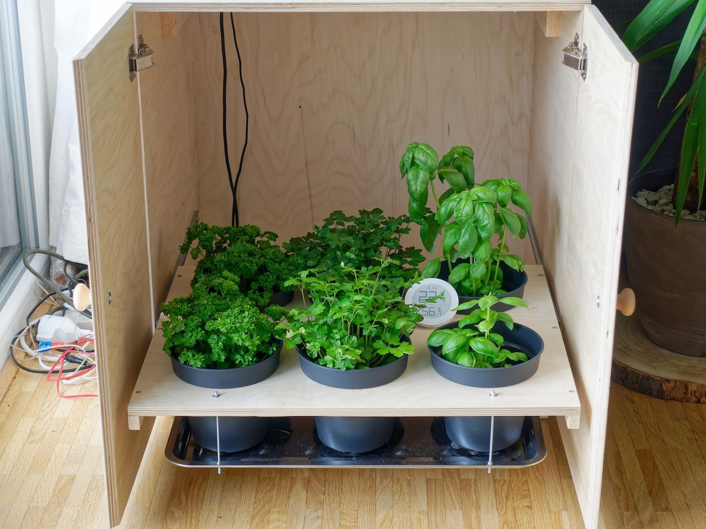
Electronics
I designed this grow box so that I always have a fresh supply of herbs. It features ventilation and lighting, the spectrum of which can be adjusted as required (blue light for compact plants and red light for taller ones).
read more →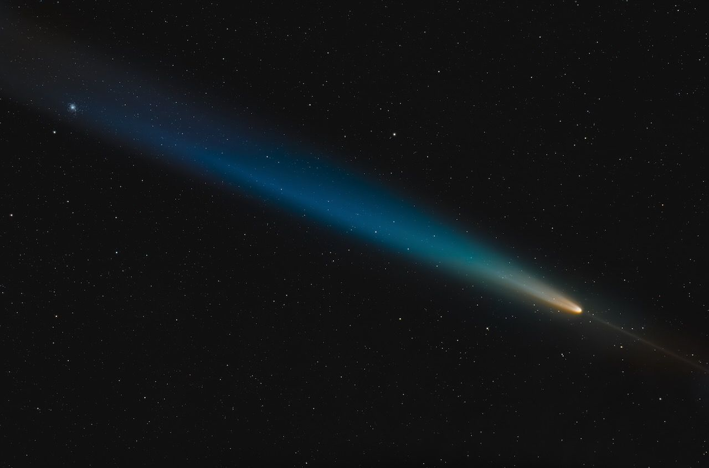
Astrophotography
Photographing C/2023 A3 proved to be quite difficult due to thick cloud cover. However, a brief spell of clear skies made this image possible.
telescopius.com ↗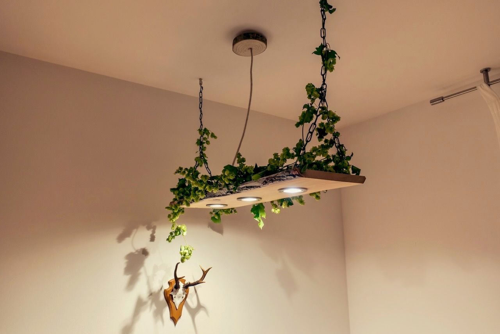
Smart Home
To create lovely lighting over the dining table, I designed this lamp, which not only provides high-quality light (CRI >95) but is also integrated into my smart home via Matter over WiFi.
read more →